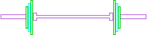
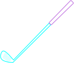

About Me
The Basics
I'm a fella that writes software. That's what I do to keep the lights on and sometimes just for fun. I also do things that don't require a keyboard, such as strength-training, golf, video games (I’m a console peasant, technically no keyboard), movies and a little reading.
What is Best in Life?
To crush your enemies, see them driven before you, and to hear the lamentations of their women!
Actually, that’s what’s best for Conan the Barbarian. For me, the Mrs. and our mutts are the reason I get up in the morning and stare at a computer screen half of my waking hours. Well, them and pizza...and video games...and shiny new golf stuff...but, ya, tooooootally them.
Other Interests
Strength Training
I’ve been following Starting Strength (on and off) since 2017. It’s a great program that’s simple and works the entire body with barbell lifts. The goal with SS isn’t an 8-pack and oiling yourself up to stand in front of a mirror. The goal is to get stronger, i.e., healthier and harder to kill 💪💪💪.
If you’ve been wanting to get into strength training, there are great resources online that are easy to find via their websites and/or YouTube and Instagram. The basics: you rotate two workouts, 3 days/week. So, week one, you do A-B-A, week two, B-A-B and so on. Workout A will be a squat, bench and rows and B will be squat, overhead press and deadlift. It’s exactly that easy to get started and it works <steps off of soapbox>.
Video Games
One of the true loves of my life. I’ve been gaming since I was in grade school, starting with the Atari 2400. I’ve stopped all manner of baddies on a ColecoVision, NES, Nintendo Game Boy, Sega Genesis, SNES, N64, Sega Saturn, PS1, Nintendo GameCube, PS2, Sega Dreamcast, OG XBox, Nintendo Wii, PS3, Xbox 360, XBox One, Nintendo Switch and of course a smattering of gaming PC’s where I obsessed over the likes of StarCraft, Duke Nukem and on and on. These days I stick with consoles, namely my trusty Xbox One S and PS4. I don’t game as much as I used to, but I still love diving into a world that’s not my own and disappearing for a few hours.
While some folks see games as a waste of time, I’d not be a software developer without 'em. Gaming got me building PC’s and building PC’s got me thinking, “computers...but...getting paid to use them!”. Take that, mom and dad! Just kiddin' -- they bought many of the consoles I listed. Sadly, they stopped buying all of my games when I “got a job” and “got married". Pretty mean, right?!
Golf
...actually, I have no idea why I like golf. Seriously, I walk away feeling like I've had my ass handed to me, not necessarily by the people I play with, but by the game of golf itself. I’ve shot 77 one week and 95 the next. My swing feels exactly the same way every round, but somehow one week I hit the ball like I have four functioning limbs and the next like I have no head.
After all of that abuse, I still can’t wait to play again <shrugs>. Soooooo...anyone up for 18 this weekend?